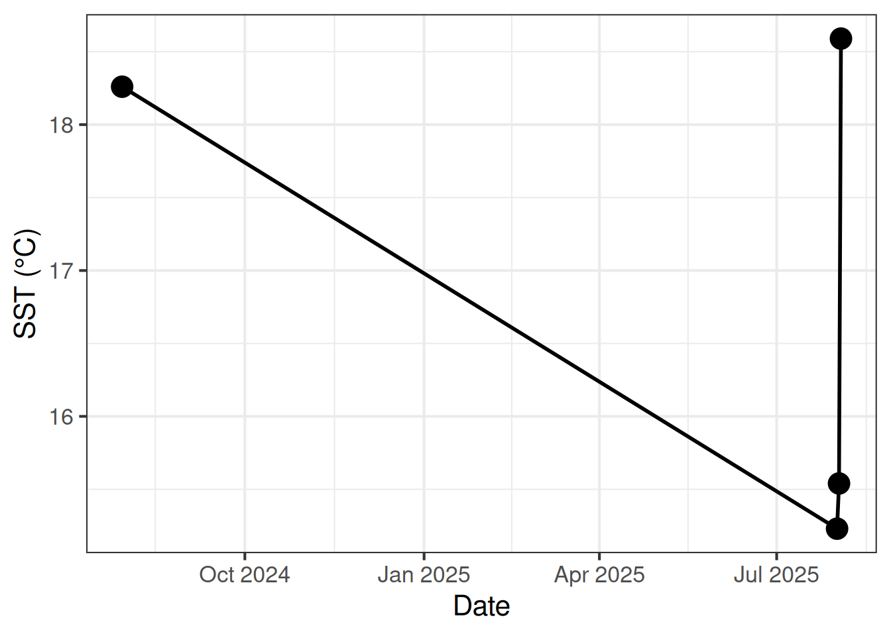

Standard Report
Background
This page provides a simple example that visualizes the results of a GitHub Actions workflow with a simple set of steps using MATLAB code:
- Access most recent day of ROMS sea surface temperature (SST) data via OPeNDAP server
- Calculate the mean value of sea surface temperature for a given region
- Append this mean value to the end of a CSV file and push to the GitHub repo
Below is a table showing these results, as well as a simple plot showing these values over time. Although the code used to access and summarize these data in the GitHub Actions workflow was written in MATLAB, the code to visualize these results from the CSV file are written in R for this Quarto website.
Note
You can find the MATLAB script, CSV file, and GitHub Actions workflow YAML linked on the right side of this page.
Output
